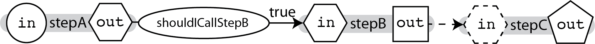
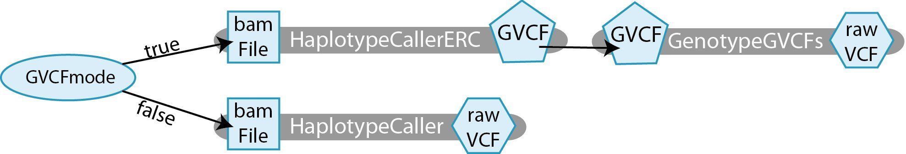
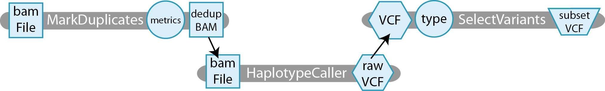
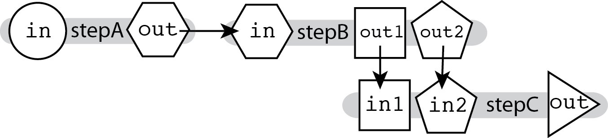
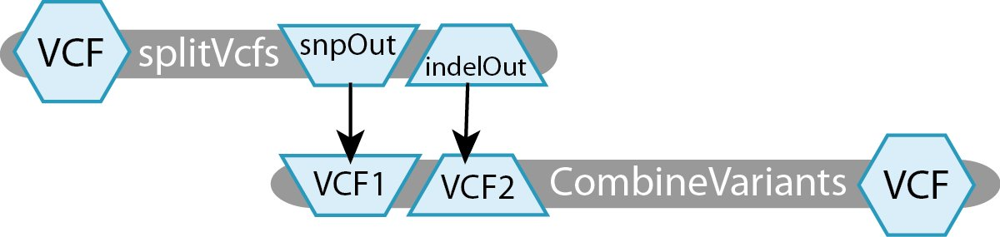
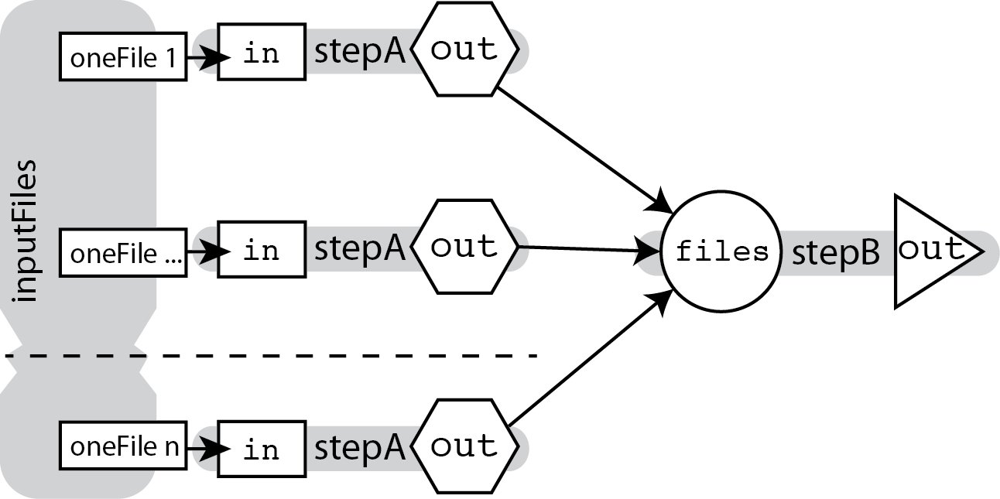
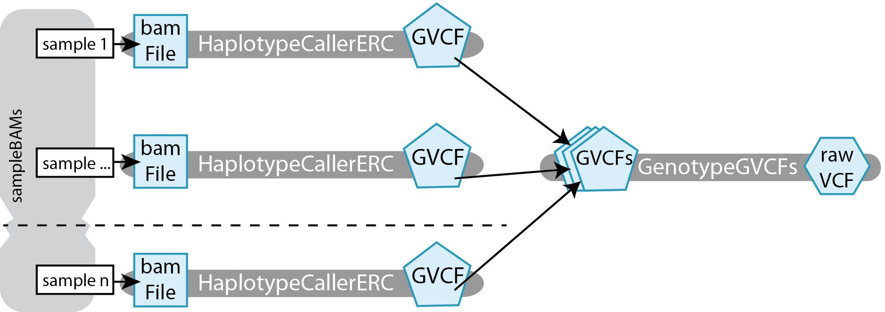
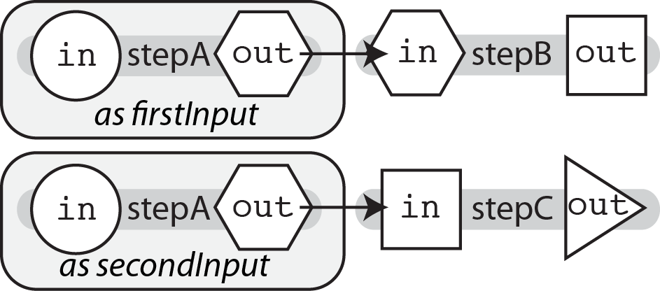
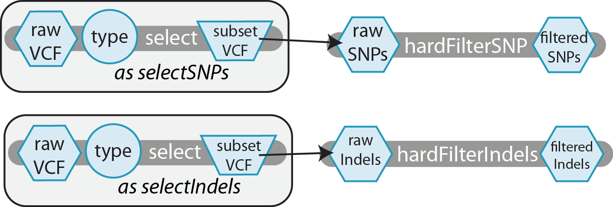

Plumbing Options¶
条件控制(if/else)¶
注解
条件语句已经在Cromwell version 24 中实现
有时，在管道操作时，有些步骤需要在某些时候运行，而不是在其他时候。这可能意味着在两条路径之间进行切换(例如，在modeA中运行一个工具vs.在modeB中运行一个工具)或完全跳过一个步骤(例如，运行一个工具vs.不运行一个工具)。在这种情况下，我们将使用条件语句。
要在WDL中使用条件语句，需要编写一个标准的if语句
if(shouldICallStepB){ call stepB {input: in=stepA.out} }
可以显式地控制if语句，正如我们在上面的示例中使用布尔变量所做的那样。它还可以通过测试其他一些变量的值来进行隐式控制，这些变量除了作为开关机制之外还有自己的用途。(i.e. if(myVar>0) { call stepB }
注解
处理条件步骤的输出有点不同;有关stepC的详细信息，请参阅下面的通用示例脚本
WDL还没有一个else语句。现在为了解决这个问题，我们使用!修改器获取原始变量的相反值，如
Boolean myBoolVar if(myBoolVar) { call taskA } if(!myBoolVar) { call taskB }
通用的示例脚本¶
在下面的上下文中查看这个管道方法。
workflow Conditional { File firstInput Boolean shouldICallStepB call stepA { input: in=firstInput } if(shouldICallStepB) { call stepB } call stepC { input: in_maybe=stepB.out} } task stepA { File in command { programA I=${in} O=outputA.ext } output { File out="outputA.ext" } } task stepB { File in command { programB I=${in} O=outputB.ext } output { File out="outputB.ext" } } task stepC { File? in_maybe command { programB I=${in_maybe} O=outputB.ext } output { File out="outputB.ext" } }
需要注意的是，stepC的输入必须声明为可选类型，使用?修饰符。在 if{…} 块之外，stepB的输出不能保证存在，因此stepC必须通过允许可选输入来处理它不运行的可能性。
具体的例子¶
这里我们声明GVCFmode，一个布尔类型的变量。如果这是真的，那么我们想要在GVCF模式下运行这个工具，否则我们想要在普通模式下运行它。基本上，这个工作流允许您选择希望运行哪个HaplotypeCaller方法。
对于我们的用例，我们已经声明了三个任务，如下:
- HaplotypeCallerERC接收一个bamFile文件并生成一个GVCF文件。
- GenotypeGVCFs接收一个文件GVCF并生成一个文件rawVCF。
- HaplotypeCaller接收一个bamFile文件并生成一个rawVCF文件。
具体的例子脚本¶
workflow ConditionalExample { Boolean GVCFmode File inputBam if (GVCFmode) { call HaplotypeCallerERC { input: bamFile=inputBam } call GenotypeGVCF { input: GVCF=HaplotypeCallerERC.GVCF } } if (!GVCFmode) { call HaplotypeCaller { input: bamFile=inputBam } } } task HaplotypeCaller { File bamFile command { java -jar GenomeAnalysisTK.jar \ -T HaplotypeCaller \ -R reference.fasta \ -I ${bamFile} \ -o rawVariants.vcf } output { File rawVCF="rawVariants.vcf" } } task HaplotypeCallerERC { File bamFile command{ java -jar GenomeAnalysisTK.jar \ -T HaplotypeCaller \ -ERC GVCF \ -R reference.fasta \ -I ${bamFile} \ -o rawLikelihoods.gvcf } output { File GVCF="rawLikelihoods.gvcf" } } task GenotypeGVCF { File GVCF command { java -jar GenomeAnalysisTK.jar \ -T GenotypeGVCFs \ -R reference.fasta \ -V ${GVCF} \ -o rawVariants.vcf } output { File rawVCF="rawVariants.vcf" } }
线性链接¶
在工作流中，将任务链在一起的最简单方法是线性链，我们将一个任务的输出提供给下一个任务的输入，就像这样:
这很容易做到，因为WDL允许我们使用task_name.output_variable语法，在另一个任务的call语句(实际上，在工作流块的任何地方)中引用任何任务的output(在任务的输出块中适当地声明)。这里，我们简单地在stepB调用中指定我们希望它使用stepA.out作为输入变量in的值，这与stepC的规则相同。
call stepB { input: in=stepA.out } call stepC { input: in=stepB.out }
这依赖于一个称为层次命名的原则，它允许我们根据组件的父类来识别组件。
通用的示例脚本¶
把它放在上下文中，下面是上面所示的工作流的完整代码:
workflow LinearChain { File firstInput call stepA { input: in=firstInput } call stepB { input: in=stepA.out } call stepC { input: in=stepB.out } } task stepA { File in command { programA I=${in} O=outputA.ext } output { File out = "outputA.ext" } } task stepB { File in command { programB I=${in} O=outputB.ext } output { File out = "outputB.ext" } } task stepC { File in command { programC I=${in} O=outputC.ext } output { File out = "outputC.ext" } }
具体的例子¶
让我们来看一个具体的线性链例子，它位于一个工作流中，该工作流设计用于预处理一些DNA排序数据(markdupl)，对预处理数据执行分析(HaplotypeCaller)，然后对分析结果进行子集处理(selectvariant)。
工作流程包括三个任务:
- MarkDuplicates 接受一个bamFile文件并生成一个文件metrics 和一个文件dedupBAM。
- HaplotypeCaller 接收一个bamFile文件并生成一个rawVCF文件。
- SelectVariants 接受文件VCF和字符串类型，以指定是选择INDELs还是SNPs。它生成一个文件subsetVCF，仅包含指定类型的变异。
具体的例子脚本¶
这就是上面所示的工作流程的代码:
workflow LinearChainExample { File originalBAM call MarkDuplicates { input: bamFile=originalBAM } call HaplotypeCaller { input: bamFile=MarkDuplicates.dedupBam } call SelectVariants { input: VCF=HaplotypeCaller.rawVCF, type="INDEL" } } task MarkDuplicates { File bamFile command { java -jar picard.jar MarkDuplicates \ I=${bamFile} O=dedupped.bam M= dedupped.metrics } output { File dedupBam = "dedupped.bam" File metrics = "dedupped.metrics" } } task HaplotypeCaller { File bamFile command { java -jar GenomeAnalysisTK.jar \ -T HaplotypeCaller \ -R reference.fasta \ -I ${bamFile} \ -o rawVariants.vcf } output { File rawVCF = "rawVariants.vcf" } } task SelectVariants { File VCF String type command { java -jar GenomeAnalysisTK.jar \ -T SelectVariants \ -R reference.fasta \ -V ${VCF} \ --variantType ${type} \ -o rawIndels.vcf } output { File subsetVCF = "rawIndels.vcf" } }
注解
注意，为了简单起见，这里省略了索引文件的处理，这必须在WDL中显式地完成。有关如何实现此目的的示例，请参阅教程和实际工作流。
多输入/多输出¶
将输出连接到线性链接中描述的输入(依赖于分层命名)的能力允许您将产生多个输出并接受多个输入的工具链接在一起，并精确地指定哪个输出输入到哪个输入。
由于stepB的输出名称不同，我们可以指定下一步输入字段中的每个输出的确切位置。
call stepC { input: in1=stepB.out1, in2=stepB.out2 }
通用的示例脚本¶
在上下文中，这种管道看起来如下:
workflow MultiOutMultiIn { File firstInput call stepA { input: in=firstInput } call stepB { input: in=stepA.out } call stepC { input: in1=stepB.out1, in2=stepB.out2 } } task stepA { File in command { programA I=${in} O=outputA.ext } output { File out = "outputA.ext" } } task stepB { File in command { programB I=${in} O1=outputB1.ext O2=outputB2.ext } output { File out1 = "outputB1.ext" File out2 = "outputB2.ext" } } task stepC { File in1 File in2 command { programB I1=${in1} I2=${in2} O=outputC.ext } output { File out = "outputC.ext" } }
具体的例子¶
该工作流使用Picard的splitVcfs工具将原始VCF分隔成两个VCF文件，一个文件只包含snp，另一个文件只包含indel。下一步是将这两个分离的VCFs重新合并为一个。
对于这个玩具示例，我们定义了两个任务:
- splitVcfs 接收一个文件VCF并输出一个文件snpOut和一个文件indelOut。
- CombineVariants 接收文件VCF1和文件VCF2，生成文件VCF。
具体的例子脚本¶
上面描述的工作流程，就其整体而言，应该是这样的:
workflow MultiOutMultiInExample { File inputVCF call splitVcfs { input: VCF=inputVCF } call CombineVariants { input: VCF1=splitVcfs.indelOut, VCF2=splitVcfs.snpOut } } task splitVcfs { File VCF command { java -jar picard.jar SplitVcfs \ I=${VCF} \ SNP_OUTPUT=snp.vcf \ INDEL_OUTPUT=indel.vcf } output { File snpOut = "snp.vcf" File indelOut = "indel.vcf" } } task CombineVariants { File VCF1 File VCF2 command { java -jar GenomeAnalysisTK.jar \ -T CombineVariants -R reference.fasta \ -V ${VCF1} \ -V ${VCF2} \ --genotypemergeoption UNSORTED \ -o combined.vcf } output { File VCF = "combined.vcf" } }
注解
注意，为了简单起见，这里省略了索引文件的处理，这必须在WDL中显式地完成。有关如何实现此目的的示例，请参阅教程和实际工作流。
散集的并行性¶
并行性是一种通过并行执行几个操作而不是顺序执行(即在开始下一个操作之前等待每个操作完成)来使程序更快完成的方法。有关并行性的更详细介绍，可以在这里深入阅读。
为此，我们使用WDL标准库中的scatter函数，该函数将在数组中的每个输入上生成运行相同任务的可并行作业，并将结果作为数组输出。
Array[File] inputFiles scatter (oneFile in inputFiles) { call stepA { input: in=oneFile } } call stepB { input: files=stepA.out }
这里的神奇之处在于，输出的数组被生成并传递给下一个任务，而无需您明确声明它是一个数组。即使根据它的声明，stepA的输出看起来像一个单独的文件，但它只引用了stepA.out。在任何其他call语句中，WDL都足以知道您指的是对所有并行stepA作业的输出进行分组的数组。
换句话说，流程的分散部分是显式的，而聚集部分是隐式的。
通用的示例脚本¶
把它放在上下文中，下面是上面所示的工作流的完整代码:
workflow ScatterGather { Array[File] inputFiles scatter (oneFile in inputFiles) { call stepA { input: in=oneFile } } call stepB { input: files=stepA.out } } task stepA { File in command { programA I=${in} O=outputA.ext } output { File out = "outputA.ext" } } task stepB { Array[File] files command { programB I=${files} O=outputB.ext } output { File out = "outputB.ext" } }
具体的例子¶
让我们看一个具体的分散-收集并行性的例子，在一个工作流中设计为每个样本单独调用变量(HaplotypeCaller)，然后一起对所有每个样本的GVCFs执行联合基因分型(GenotypeGVCFs)。
工作流程包括两项工作:
- HaplotypeCallerERC 接收一个bamFile文件并生成一个GVCF文件。
- GenotypeGVCFs 接收一个数组[文件]GVCF并生成一个文件rawVCF。
具体的例子脚本¶
这就是上面所示的工作流程的代码:
workflow ScatterGatherExample { Array[File] sampleBAMs scatter (sample in sampleBAMs) { call HaplotypeCallerERC { input: bamFile=sample } } call GenotypeGVCF { input: GVCFs=HaplotypeCallerERC.GVCF } } task HaplotypeCallerERC { File bamFile command { java -jar GenomeAnalysisTK.jar \ -T HaplotypeCaller \ -ERC GVCF \ -R reference.fasta \ -I ${bamFile} \ -o rawLikelihoods.gvcf } output { File GVCF = "rawLikelihoods.gvcf" } } task GenotypeGVCF { Array[File] GVCFs command { java -jar GenomeAnalysisTK.jar \ -T GenotypeGVCFs \ -R reference.fasta \ -V ${GVCFs} \ -o rawVariants.vcf } output { File rawVCF = "rawVariants.vcf" } }
注解
注意，为了简单起见，这里省略了索引文件的处理，这必须在WDL中显式地完成。有关如何实现此目的的示例，请参阅教程和实际工作流。
另外，请注意，在本例中我们没有明确处理数组数据类型的分隔符。要明确了解如何指定${GVCFs}输入，请参阅教程。
任务混叠¶
当您需要在工作流中多次调用任务时，可以使用任务别名。每次您需要在工作流中再次使用任务的定义并更改名称时，复制粘贴任务的定义并更改名称都是非常繁琐的。这种方法称为复制和粘贴编程，在开始时非常简单，但从长远来看很难维护。假设您在某个任务中发现了一个输入错误—您需要修复每个粘贴的任务中的输入错误!但是，使用WDL内置的任务别名功能，您可以调用相同的任务代码并为其分配别名。然后，根据分层命名的原则，为了访问别名任务的输出，我们使用别名而不是原始任务名称。
要使用别名，我们使用语法调用taskName作为别名。
call stepA as firstSample { input: in=firstInput } call stepA as secondSample { input: in=secondInput } call stepB { input: in=firstSample.out } call stepC { input: in=secondSample.out }
通用的示例脚本¶
工作流程及其任务大致如下:
workflow taskAlias { File firstInput File secondInput call stepA as firstSample { input: in=firstInput } call stepA as secondSample { input: in=secondInput } call stepB { input: in=firstSample.out } call stepC { input: in=secondSample.out } } task stepA { File in command { programA I=${in} O=outputA.ext } output { File out = "outputA.ext" } } task stepB { File in command { programB I=${in} O=outputB.ext } output { File out = "outputB.ext" } } task stepC { File in command { programC I=${in} O=outputC.ext } output { File out = "outputC.ext" } }
具体的例子¶
让我们看看这个任务混叠的概念在一个真实的例子;使用GATK，该工作流使用相同的任务select(但有两个不同的别名调用，即selectSNPs和selectIndels)将snp和indel分离到不同的vcf文件中。然后，这些调用的不同输出由专门为它们设计的单独任务进行硬筛选，分别为hardFilterSNP和hardFilterIndel。
对于这个玩具示例，我们定义了三个任务:
- select接受一个字符串类型(指定“SNP”或“Indel”)和一个文件rawVCF，输出一个文件raw子集，其中只包含指定类型的变体。
- hardFilterSNP接收文件rawsnp并输出文件filteredsnp。
- hardFilterIndels接收文件rawIndels并输出文件filteredIndels。
具体的例子脚本¶
上面的工作流程描述是这样的:
workflow taskAliasExample { File rawVCFSample call select as selectSNPs { input: type="SNP", rawVCF="rawVCFSample" } call select as selectIndels { input: type="INDEL", rawVCF="rawVCFSample" } call hardFilterSNP { input: rawSNPs=selectSNPs.rawSubset } call hardFilterIndel { input: rawIndels=selectIndels.rawSubset } } task select { String type File rawVCF command { java -jar GenomeAnalysisTK.jar \ -T SelectVariants \ -R reference.fasta \ -V ${rawVCF} \ -selectType ${type} \ -o raw.${type}.vcf } output { File rawSubset = "raw.${type}.vcf" } } task hardFilterSNP { File rawSNPs command { java -jar GenomeAnalysisTK.jar \ -T VariantFiltration \ -R reference.fasta \ -V ${rawSNPs} \ --filterExpression "FS > 60.0" \ --filterName "snp_filter" \ -o .filtered.snps.vcf } output { File filteredSNPs = ".filtered.snps.vcf" } } task hardFilterIndel { File rawIndels command { java -jar GenomeAnalysisTK.jar \ -T VariantFiltration \ -R reference.fasta \ -V ${rawIndels} \ --filterExpression "FS > 200.0" \ --filterName "indel_filter" \ -o filtered.indels.vcf } output { File filteredIndels = "filtered.indels.vcf" } }
注解
注意，为了简单起见，这里省略了索引文件的处理，这必须在WDL中显式地完成。有关如何实现此目的的示例，请参阅教程和实际工作流。